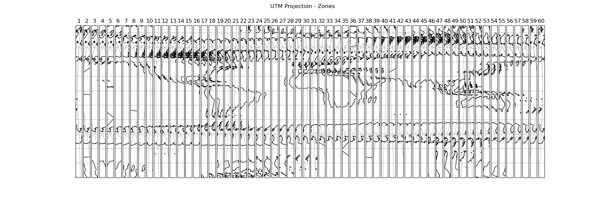

Note
Click here to download the full example code
Displaying all 60 zones of the UTM projection¶
This example displays all 60 zones of the Universal Transverse Mercator projection next to each other in a figure.
First we create a figure with 60 subplots in one row. Next we set the projection of each axis in the figure to a specific UTM zone. Then we add coastlines, gridlines and the number of the zone. Finally we add a supertitle and display the figure.
import cartopy.crs as ccrs
import matplotlib.pyplot as plt
def main():
# Create a list of integers from 1 - 60
zones = range(1, 61)
# Create a figure
fig = plt.figure(figsize=(18, 6))
# Loop through each zone in the list
for zone in zones:
# Add GeoAxes object with specific UTM zone projection to the figure
ax = fig.add_subplot(1, len(zones), zone,
projection=ccrs.UTM(zone=zone,
southern_hemisphere=True))
# Add coastlines, gridlines and zone number for the subplot
ax.coastlines(resolution='110m')
ax.gridlines()
ax.set_title(zone)
# Add a supertitle for the figure
fig.suptitle("UTM Projection - Zones")
# Display the figure
plt.show()
if __name__ == '__main__':
main()
Total running time of the script: ( 0 minutes 6.771 seconds)